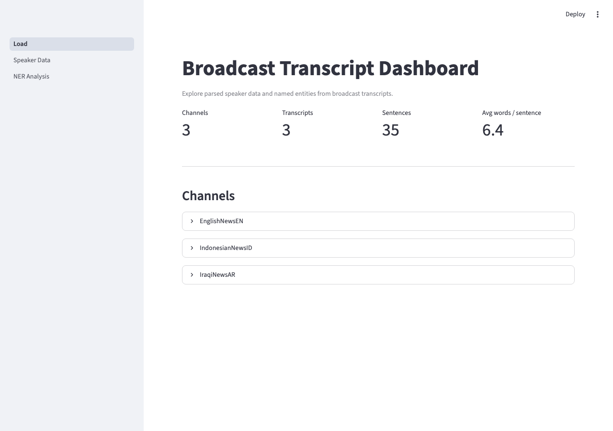
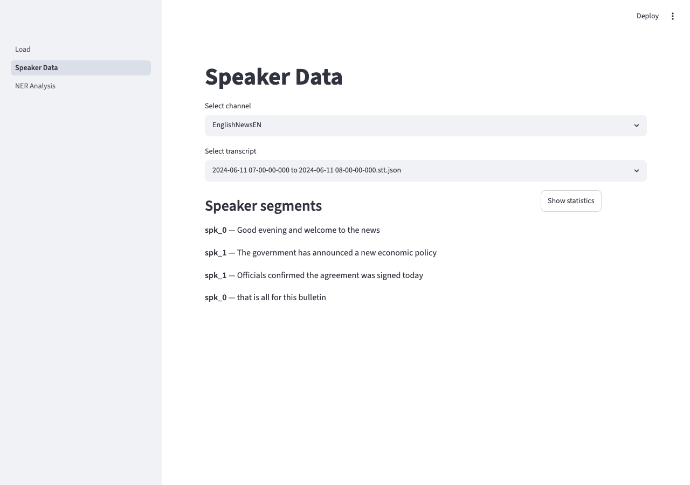
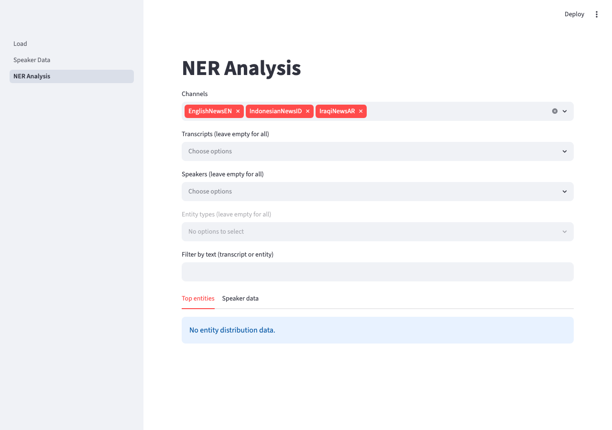

Analytical Method
Broadcast Transcript Analysis
Parsing, speaker attribution, named entity extraction, and duplicate detection across multilingual broadcast transcripts — with a Streamlit dashboard for data exploration
Developed at CASM Technology · Senior Data Scientist
Context
From Raw STT to Structured Data
Broadcast media monitoring at scale produces a continuous stream of speech-to-text (STT) transcripts — one JSON file per channel per broadcast window, across multiple languages. The raw output from a provider like AWS Transcribe includes the full transcript text, word-level timing, confidence scores, and speaker diarisation labels, but it is not in a form amenable to analysis: speakers are identified only by generic labels, word items are not yet attributed to turns, and there is no structure that maps entities to speakers or detects when the same broadcast appears more than once.
This pipeline was developed across several broadcast monitoring projects, initially for Arabic-language channels and later extended to Indonesian and English. The same core processing logic applies regardless of language; language-specific handling (such as Arabic prefix merging) is layered on top of the shared base.
Parsing
Diarisation and Speaker Attribution
The STT JSON format separates word-level items (with start/end timestamps and confidence scores) from speaker label segments (which identify who was speaking across each time window). Attributing words to speakers requires aligning these two structures by timestamp — a word item is assigned to the speaker segment that contains its time range.
Each speaker turn is then reconstructed as a sentence: the word items for that segment are joined in sequence, punctuation is inserted where present, and the result is stored alongside channel name, filename, broadcast time window, speaker label, and segment start/end times. This produces one row per speaker turn — a format that downstream NER extraction and dashboard filtering can operate on directly.
For Arabic, AWS Transcribe frequently introduces a space between proclitic prefixes (و, ف, ب, ل, ال, and compound forms like وال, فال, بال) and the word they attach to. A regex merge step removes these spaces before the sentence is finalised, preventing incorrect tokenisation in downstream NLP.
Extraction
Named Entity Recognition
Entity extraction runs over the structured speaker sentence data using a HuggingFace token classification model. The model is run in batch mode over the speaker sentences for each channel, with a configurable batch size and maximum sequence length. Outputs are decoded using the model's label vocabulary (B-I-O tagging scheme), with subword tokens merged back into full entity spans.
Post-processing collapses B- and I- tagged tokens into a single entity record with a text string and label. An optional label remapping allows project-specific entity type normalisation. The final output is an entities column on the speaker sentence DataFrame, with each row holding a list of extracted entities — and a parallel entity_schema column giving a dict of entity type to unique values for that sentence.
NER extraction runs as a separate processing step and is model-agnostic: any HuggingFace token classification model can be used, making it straightforward to swap in a language-appropriate NER model per channel.
Quality
Duplicate Detection
Broadcast monitoring data frequently contains near-duplicate transcripts: the same broadcast captured from multiple sources, overlapping recording windows, or repeated segments. Deduplication needs to be fuzzy rather than exact — minor transcription differences or partial overlaps mean that exact hashing on the full transcript text misses most true duplicates.
The duplicate detector uses rapidfuzz token-based string similarity to compare transcripts pairwise within a channel. Any pair above a configurable similarity threshold (default 80%) is flagged as a candidate duplicate. The result is a report that annotates each transcript with the list of transcripts it is near-identical to, which the analyst can use to decide whether to deduplicate before downstream processing.
A content hash (MD5 of the full transcript text) is generated at parse time, providing a fast exact-match signal before the more expensive pairwise comparison runs.
Pipeline
Four sequential stages. Parse and Extract run on the raw data directory; Detect runs on the parse outputs; Explore reads the processed outputs from the dashboard.
| Stage | Class / Module | What it does |
|---|---|---|
| Parse | Channel / Transcript / Speaker |
Reads .stt.json files, aligns word items to speaker segments by timestamp, reconstructs speaker sentences with Arabic prefix merging, writes structured CSVs to outputs/<ChannelName>/. |
| Extract | NamedEntityExtractions |
Runs a HuggingFace token classification model over speaker sentences in batch. Merges B-I-O spans into entity records. Adds entities and entity_schema columns to the parsed DataFrame. |
| Detect | DuplicateDetector |
Pairwise rapidfuzz similarity across all transcripts within a channel. Flags pairs above threshold as candidates. Returns a report DataFrame with a duplicates column listing near-identical transcripts per row. |
| Explore | dashboard/Load.py |
Streamlit dashboard. Reads parsed CSVs from outputs/. Provides per-channel/transcript/speaker views and entity filtering. Start with streamlit run dashboard/Load.py. |
Input format — .stt.json files produced by AWS Transcribe (or a compatible provider), with filenames encoding the broadcast window: "2024-06-11 07-00-00-000 to 2024-06-11 08-00-00-000.stt.json". Channel subfolders under data/ determine how transcripts are grouped.
Dashboard
A three-page Streamlit dashboard (streamlit run dashboard/Load.py) built on an MVC architecture. Reads processed CSVs from outputs/ — run the parse stage first to populate them. Supports Iraqi Arabic (ar-IQ), Indonesian (id-ID), and English (en-GB), as well as any other language covered by the chosen NER model.
| Page | What it shows |
|---|---|
| Load | Top-level metrics: total channels, transcripts, sentences, and average words per sentence. Per-channel expanders with individual transcript/sentence/speaker counts. |
| Speaker Data | Select a channel, then a specific transcript. Shows all diarised speaker turns in sequence with speaker labels. A statistics panel shows the sentence and word count breakdown per speaker. |
| NER Analysis | Multi-channel, multi-transcript, and multi-speaker selection. Entity type filter (PER, ORG, LOC, etc.) and free-text search. Two tabs: top entity frequency distribution across the selection; speaker data with in-line entity highlighting. Populated once NER extraction has been run. |

Load — channel metrics overview

Speaker Data — diarised turns per transcript

NER Analysis — entity filters across channels
Languages
The dummy dataset in the repository covers three language tracks. Arabic includes prefix merging; Indonesian and English run through the standard pipeline without language-specific post-processing.
| Language | STT lang code | Notes |
|---|---|---|
| Iraqi Arabic | ar-IQ |
Regex prefix merging applied (و، ف، ب، ل، ال and compound forms) |
| Indonesian | id-ID |
Standard pipeline; NER model selected per deployment |
| English | en-GB |
Standard pipeline; NER model selected per deployment |
Tech Stack
Links
Library & Pipeline
Dashboard
Related Methods